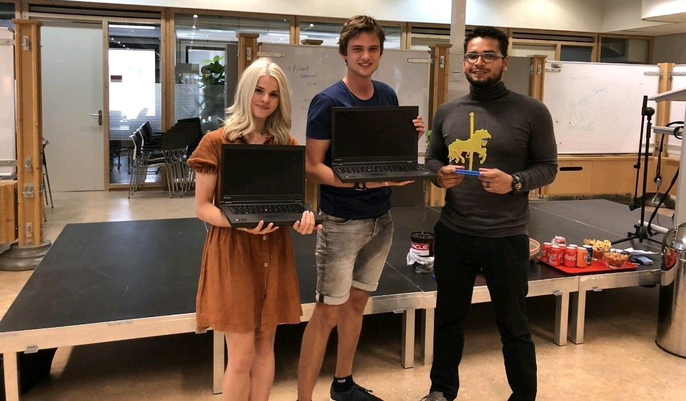

Privacy Tycoon
Begin je eigen social media platform en leer over privacy.
Privacy Tycoon - Jaar 3: Periode 4
Je bent Mork Zockerborg, CEO van een startup social media platform. Je krijgt als CEO te maken met lastige wetgevingen rondom de privacy van je gebruikers. Dat kost veel tijd en geld, veel te lastig om mee bezig te zijn dus. Probeer zoveel mogelijk geld te verdienen ten koste van je gebruikers! Maar pas op.De autoriteiten zitten je op de hielen....
Download:
De game is speelbaar op windows machines. Downloadlink: klik hier.
Winnaar van de Hogeschool Rotterdam Privacy Carrousel 2018
Deze game heeft de Privacy Carrousel van 2018 gewonnen! Er is met erg veel plezier aan gewerkt. Sponsoren bedankt voor de mooie prijs!
